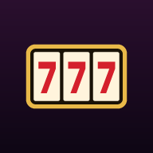

Slot Cabinet
Slot machine games built for a home cabinet, to try on a phone or a PC.
PlayPut it on your phone
iPhone
- Open this page in Safari.
- Tap Play.
- Tap the Share button, then Add to Home Screen, then Add.
- Open Slots from your home screen. It fills the screen, with no browser bars.
Android
- Open this page in Chrome and tap Play.
- Tap the ⋮ menu, then Install app (or Add to Home screen).
- Open Slots from your home screen.
A PC
Play in Chrome or Edge. To install it, use the install button at the right of the address bar, or the browser's menu, then Install. A game opens in a window of its own, the shape of the cabinet's screen.
Playing
Every game starts with 100 000 credits. They are play credits, not money, and nothing you win or lose leaves your phone. Sound starts on, and a game opens with its music: turn it off with Sound, or M.
| To | On a phone | With keys |
|---|---|---|
| Choose a game | Swipe, or tap a card | ← → |
| Play it | Tap it again | Space |
| Spin | Tap the game | Space |
| Bet less or more | − and + | ↓ ↑ |
| See what pays | Pays | P |
| Sound on or off | Sound | M |
| Save your credits and bet | Save | S |
| Load a save | Load | L |
| Back to the games | Menu | G |
| Full screen | (an installed app is) | F |
Saves stay on your phone or in your browser. Clearing the browser's data, or removing the app, deletes them.
Offline, and new versions
A game you have played once plays again without a connection. Games you have not opened yet need one the first time.
When a new version comes out it downloads by itself while you play, and arrives the next time you go back to the games.